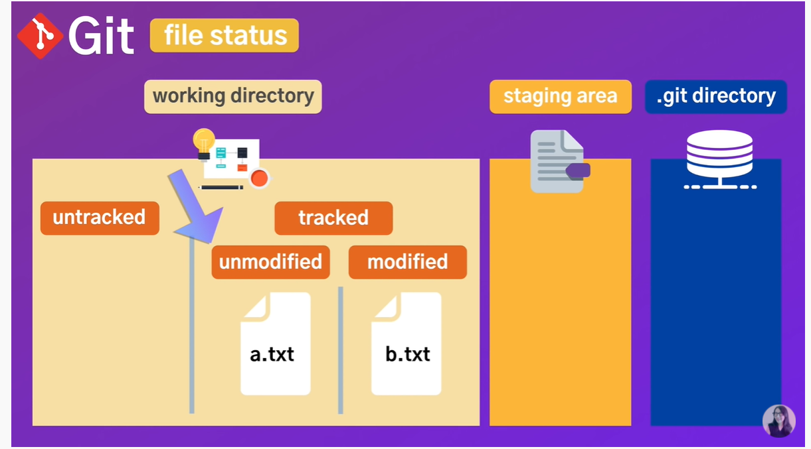
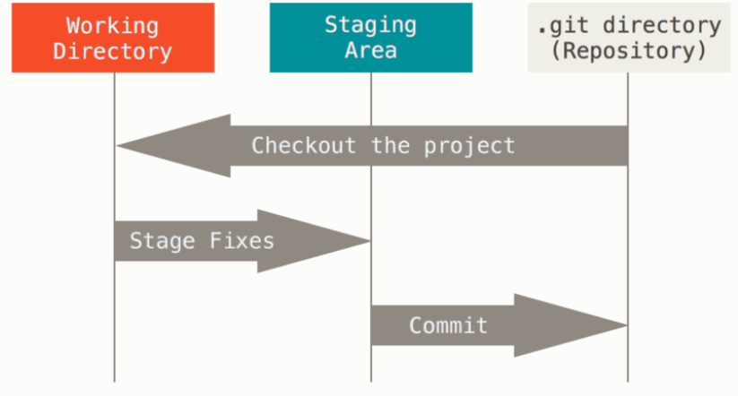

Git Basic

자료 출처:youtube 드림코딩by앨리
현재 내가 작업을 하고 있는 공간=working directory
곧 커밋할 파일에 대한 정보를 저장하는 곳 = Staging Area
커밋 된 정보들이 저장되는 곳 = .git directory
깃이 파일에 대한 정보를 가지고있는게 tracked
없는게 untracked
깃이 트레킹 하고있는것들중에서도 수정이 여부에 따라 unmodified와 modified로 나뉨
전체적인 흐름

1.working directory에서 파일을 수정한다
2.staging area에 파일을 stage 해서 커밋할 스냅샷을 만든다.
3.staging area에 있는 파일들을 커밋해서 git 디렉토리에 영구적인 스냅샷으로 저장한다.
자주 사용하는 깃 명령어
Git + 옵션 /형태로 이루어짐
git init . => 현재 있는 폴더에 깃의 로컬저장소 생성(프로젝트 생성후 처음에만 하시면 됩니다.)
git add . => 현재 디렉토리에 있는 파일들의 변경사항 staging area로 넘겨줌
git status => 현재 브랜치에 올라가있는 정보들
git commit -m "커밋할 메세지(ex: login function add)"=> 메세지와 함께 커밋
git remote add origin 깃헙 레포지토리 url(깃허브 레포지토리와 연결 해줄 때만 해주시면 됩니다 최초 연결시에만.)=> 원격저장소 연결
git remote -v => 연결된 레포지토리 확인
git push origin master => 연결된 레포지토리의 마스터 브랜치로 푸쉬
Go